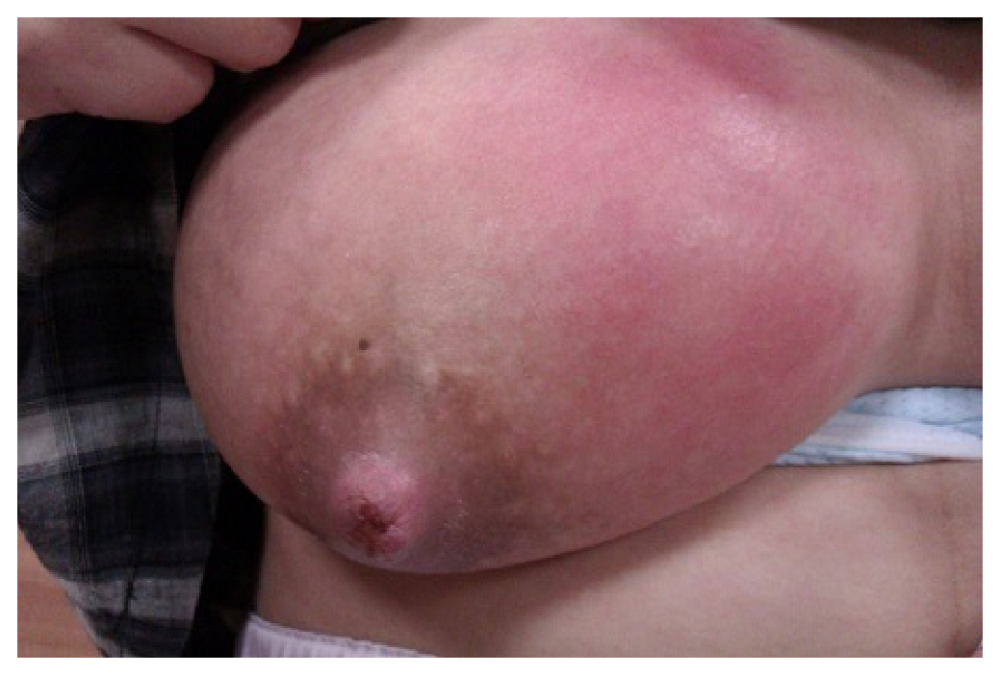

113 年第 1 次護理師產兒科護理學試題與答案
這一頁是民國 113 年第 1 次護理師產兒科護理學的整份歷屆試題，共 50 題，題目與標準答案出自考選部「國家考試試題及測驗式試題答案」開放資料，其中 50 題附有詳解。以下逐題列出題幹、選項與答案；要計時作答或記錄成績，請用線上練習。
考選部原始場次代碼：113030
線上作答這一科 →
全部 50 題
第 1 題
有關孕產婦死亡率之敘述，下列何者正確？
- （A）係指一年內每十萬名活產中，於懷孕期間或懷孕終止42天內之婦女死亡數
- （B）係指一年內每十萬名活產中，於第三妊娠期或懷孕終止7天內之婦女死亡數
- （C）係指一年內每十萬名活產中，於第三妊娠期或懷孕終止30天內之婦女死亡數
- （D）係指一年內每十萬名活產中，於懷孕期間或懷孕終止24小時內之婦女死亡數
答案：（A）
詳解與考點
孕產婦死亡率（maternal mortality ratio）國際標準定義（WHO）：一年內每十萬名活產中，於懷孕期間或懷孕終止後 42 天內，因妊娠或其處理相關原因死亡的婦女數，A 正確。其他選項均修改了時間窗（7 天、30 天、24 小時），均與官方定義不符。
第 2 題
有關妊娠期血液檢查之敘述，下列何者正確？
- （A）首次產檢需要篩檢人類免疫缺乏病毒
- （B）第一妊娠期進行母體血液葡萄糖耐受篩檢
- （C）第二妊娠期進行B群鏈球菌篩檢
- （D）第三妊娠期進行德國麻疹抗體濃度價數篩檢
答案：（A）
詳解與考點
台灣常規產檢：首次產檢（第一孕期）篩檢項目包括 HIV 抗體檢測，A 正確。第一孕期葡萄糖耐受篩檢（GCT）安排於第二孕期 24～28 週；B 群鏈球菌（GBS）篩檢於第三孕期 35～37 週；德國麻疹（rubella）抗體在首次產檢（第一孕期）即檢測，非第三孕期。
第 3 題
王先生將成為準父親，有關王先生於配偶孕期之心理變化，下列何者最適當？
- （A）第一孕期最常出現害怕生產的壓力
- （B）第二孕期最擔憂是否能勝任成為父親的角色
- （C）第一孕期常因胎動而感覺與胎兒連成一體
- （D）第二孕期常會想像胎兒模樣及身為父親的形象
答案：（D）
詳解與考點
準父親（父親角色取得）的心理變化：第二孕期因胎動明顯，父親可真實感受胎兒存在，開始想像胎兒模樣及父親形象（父親認同），D 正確。第一孕期父親最常感到不真實感；害怕生產的壓力通常出現於第三孕期；「與胎兒連成一體」的感受因胎動而強化，同樣在第二孕期，但題幹選項 D 的描述最貼切且被選為官方答案。
第 4 題
王女士，32歲，妊娠8週，前一胎因21對染色體異常引產，詢問此次有關唐氏症篩檢之敘述，下列何者最合 適？
- （A）建議妊娠16～18週之間，可以接受絨毛膜穿刺，確定胎兒染色體是否正常
- （B）建議妊娠11～12週之間，可以接受羊膜腔穿刺，確定胎兒染色體是否正常
- （C）建議妊娠21～24週之間，可以進行母血唐氏症篩檢，確定胎兒染色體是否正常
- （D）建議妊娠15～20週之間，可以接受頸部透明帶的檢測，確定胎兒染色體是否正常
本題送分，無標準答案
詳解與考點
本題經考選部公告一律給分。各選項之週數與檢查配對均有瑕疵，難有單一最適答案：(A)絨毛膜採樣（CVS）一般於妊娠10～13週施行，非16～18週；(B)羊膜腔穿刺一般於16～20週施行，非11～12週；(C)母血唐氏症篩檢為「篩檢」而非確診，且第二孕期母血篩檢約於15～20週，非21～24週；(D)頸部透明帶（NT）於11～13週+6施行、屬篩檢而非確診染色體。本案前胎為21三體、屬高風險，臨床多建議直接行絨毛膜採樣或羊膜腔穿刺確診。作答以現行產前檢查指引為準。
第 5 題
有關妊娠期的心臟血管系統生理變化，下列敘述何者錯誤？
- （A）出現生理性白血球增多症，白血球數量可增加到15,000/mm3
- （B）妊娠生理性貧血是因紅血球攜鐵蛋白的能力降低所致
- （C）心輸出量增加30～50%，以供應子宮、胎盤需要血流
- （D）血漿中白蛋白降低，使得水分易滯留在血管間隙形成水腫
答案：（B）
詳解與考點
妊娠生理性貧血（physiologic anemia of pregnancy）是因血漿容積增加幅度（約 50%）遠大於紅血球增加量（約 25%），造成稀釋性貧血，並非紅血球攜鐵蛋白能力降低所致，故 B 為錯誤敘述。選項 A（白血球生理性增多至 15,000/mm³）、C（心輸出量增加 30～50%）、D（白蛋白降低致水腫）均正確。
第 6 題
有關孕期的營養需求，下列敘述何者錯誤？
- （A）於第三孕期多補充鐵劑
- （B）整個孕期應多補充碘
- （C）磷可參與早期的細胞分裂過程
- （D）鈣質提供胎兒骨骼和牙齒的生長發育
答案：（C）
詳解與考點
本題問「錯誤」者，答案為（C）。孕期營養需求：第三孕期胎兒鐵儲存與母體血容量增加，鐵需求上升，需補充鐵劑（A 正確）；整個孕期應確保碘攝取，以利胎兒甲狀腺與腦神經發育，缺碘會影響智能發展（B 正確）；鈣質供應胎兒骨骼與牙齒生長發育（D 正確）。（C）將「磷可參與早期的細胞分裂過程」列為孕期營養指導並不恰當：磷雖參與核酸、ATP 與磷脂質等基本生理，但磷普遍存在於各類食物、孕期一般不缺乏，也不是用來強調『早期細胞分裂』而特別補充的代表性營養素，此敘述屬不正確／易誤導，故為本題的錯誤選項即正解。
第 7 題
葉女士，28歲，G1P0，待產過程中突然自然破水，內診發現子宮頸口開8公分、變薄程度80%、先露部位+1。下 列何者為最優先之護理處置？
- （A）提供灌腸
- （B）監測胎心率變化
- （C）提供氧氣
- （D）採平躺增加子宮血流
答案：（B）
詳解與考點
葉女士自然破水後，最優先評估的是胎兒安全，即監測胎心率（B）。破水後臍帶脫垂風險升高，子宮頸開 8 cm、先露部位 +1 代表胎頭已稍入骨盆，但胎心率異常仍是立即威脅。灌腸（A）不適合此時點；平躺（D）可能壓迫下腔靜脈；氧氣（C）為次要措施，需先確認胎心率是否異常才評估是否給氧。
第 8 題
陰道生產過程，下列何種情形表示先露部位胎頭已發生著冠（crowning）？
- （A）當子宮收縮時，胎頭顱頂上出現一圈可見的壓痕
- （B）當子宮收縮時，胎頭出現於陰道口，宮縮間歇時，胎頭縮回陰道內
- （C）當子宮收縮時，陰道口膨出可見胎頭，大小呈卵圓形
- （D）當宮縮間歇時，胎頭出現於陰道口且不會縮回陰道內
答案：（D）
詳解與考點
答案為（D）。著冠（crowning）是指在子宮收縮與宮縮間歇時，胎頭最大徑都持續露出於陰道口、不再縮回陰道內，表示胎兒即將娩出，故（D）正確。其餘錯誤：（A）僅描述會陰部位出現壓痕，非著冠定義；（B）「宮縮時胎頭露出、間歇時又縮回陰道內」是著冠『之前』的表現（胎頭仍在進退之間，尚未固定），並非著冠，也不是『銜接（engagement）』——銜接指的是胎頭最大橫徑通過骨盆入口平面，屬骨盆內的定位，並非在陰道口進出；（C）僅描述宮縮時陰道口膨出可見胎頭，仍未達持續不縮回的程度。故正解為（D）。
第 9 題
有關分娩期預防產後出血的措施，下列何者不適當？
- （A）待產婦在進入第二產程前，開始持續靜脈注射methylergometrine（Methergin）
- （B）胎盤娩出後，檢查胎盤以確認胎盤完整娩出
- （C）在新生兒及產婦狀況穩定下，協助親子立即肌膚接觸
- （D）產後於恢復室觀察，每15分鐘監測產婦的血壓及出血量
答案：（A）
詳解與考點
Methylergometrine（Methergin）會引發血管收縮與強烈子宮收縮，禁忌用於持續靜脈滴注；正確用法為胎盤娩出後肌注。在第二產程前即持續靜注屬不適當（A），可能造成強直性子宮收縮危及胎兒。B（確認胎盤完整）、C（肌膚接觸）、D（恢復室每 15 分鐘監測）均為正確的預防產後出血措施。
第 10 題
胎兒為頭產式，胎頭呈部分屈曲，其最可能以下列那條徑線通過產道？
- （A）枕下前囟徑（SOB）
- （B）枕額徑（OF）
- （C）枕頦徑（OM）
- （D）頦下前囟徑（SMB）
答案：（B）
詳解與考點
答案為（B）。胎頭通過產道的徑線取決於胎頭俯屈（flexion）的程度。當胎頭呈「部分屈曲（軍人式、未完全俯屈）」時，以「枕額徑（occipitofrontal, OF，約 11～12 cm）」通過產道，故（B）正確。對照其他徑線：（A）枕下前囟徑（suboccipitobregmatic, SOB，約 9.5 cm）是胎頭『完全俯屈』時的最小徑線，為最理想的頂骨產式；（C）枕頦徑（occipitomental, OM，約 13.5 cm）為胎頭『部分仰伸（額產式 brow）』時的最大徑線；（D）頦下前囟徑（submentobregmatic, SMB，約 9.5 cm）對應『完全仰伸的顏面產式（face presentation）』。題目為部分屈曲，故以枕額徑通過，正解為（B）。
第 11 題
劉女士，G1P0，子宮頸開4公分，每3分鐘宮縮一次，無胎頭骨盆不對稱（CPD），使用硬脊膜外麻醉，持續2 小時都未見胎頭下降，此時最優先之處置為何？
- （A）評估膀胱的情形
- （B）評估胎頭大小
- （C）給與ritodrine點滴注射，促進子宮收縮
- （D）評估羊水量
答案：（A）
詳解與考點
使用硬脊膜外麻醉後，感覺與運動神經均受抑制，膀胱充盈感消失，膀胱過度充盈是導致胎頭無法下降的常見可逆原因（A）。無 CPD 且已排除胎頭骨盆問題，評估膀胱並協助排尿應為首要措施。Ritodrine（C）用於抑制宮縮，與此情境相反。評估羊水量（D）及胎頭大小（B）次要。
第 12 題
王女士，初產婦，陰道生產，採純母乳哺育，產後6週重返職場的一週後，主訴發燒38℃，右側乳房情況如 圖所示，觸診溫熱且有痛感。最可能的診斷是？

- （A）因為剛剛返回工作狀態，所以最可能是壓力性乳腺管阻塞（blocked ducts）
- （B）因為幾乎整個乳房大面積發紅，所以最可能是乳房腫脹（engorgement）
- （C）因為乳頭可見傷口，所以最可能是乳腺炎（mastitis）
- （D）因為乳房3、4點鐘方向有水囊狀感，所以最可能是乳房膿瘍（breast abscess）
答案：（C）
詳解與考點
乳腺炎（mastitis）的典型三合一表現：局部大面積紅腫熱痛＋發燒≥38℃＋乳頭可見傷口（病原入侵點）（C）。本案幾乎整個乳房發紅、觸診溫熱有痛感、乳頭有傷口，符合乳腺炎而非腫脹（engorgement 無發燒）；3、4 點鐘方向水囊感才傾向膿瘍；壓力性乳管阻塞無發燒且通常局部塊狀。
第 13 題
蔡女士，初產婦，因產程遲滯而行剖腹生產，新生兒出生體重3,800公克。產婦計畫要完全哺餵母乳，擔心 自己奶水不足，因為從生產至今已兩天，都沒有脹奶的感覺，而且新生兒幾乎是含著乳房入睡，放下來就 哭。有關蔡女士對奶量的擔心，下列措施何者不適當？
- （A）評估新生兒兩天的排尿及排便情況
- （B）告訴產婦產程過長及剖腹生產都會延後脹奶出現的時間，這是正常的
- （C）肯定產婦完全母乳哺育的決定，了解這兩天新生兒吃奶及含乳的情況
- （D）了解產婦執行手擠乳的情況，討論增加手擠奶頻率的可行性
答案：（B）
詳解與考點
剖腹生產後脹奶延後是正常現象，但直接告訴產婦「產程過長及剖腹都會延後脹奶」並以此「安慰」，而未評估哺乳是否有效，屬不適當（B）。正確做法是同時評估新生兒排尿排便（A）、確認含乳與吸吮效能（C）、增加手擠奶頻率刺激泌乳（D），這三項均有助釐清奶量問題並積極介入。
第 14 題
何女士，G1P1，採陰道分娩，無任何產後合併症，產後4小時，觸診子宮底時發現位於臍上一指且偏右，下列 何者為首要的護理措施？
- （A）子宮按摩
- （B）下床活動
- （C）多喝開水
- （D）如廁解尿
答案：（D）
詳解與考點
產後 4 小時子宮底位於臍上且偏右，最常見原因是膀胱充盈推擠子宮移位。首要護理措施是協助如廁解尿（D），解尿後子宮通常可回正並下降至臍或臍下。若解尿後仍偏移才考慮子宮按摩（A）。下床活動（B）與多喝水（C）不是即時解決子宮移位的措施。
第 15 題
有關產後婦女之情緒照顧，下列護理指導何者不適當？
- （A）初產婦出現哭泣不安及缺乏育兒信心為產後憂鬱症，應儘速就醫
- （B）在接受期（taking-in phase），鼓勵產婦陳述生產經驗，接受其感受，必要時可澄清其疑慮
- （C）在緊執期（taking-hold phase），鼓勵參與及學習新生兒照護
- （D）產婦即使進入放手期（letting-go phase），仍可能有不自覺的哀傷情緒
答案：（A）
詳解與考點
產後 1 至 3 天出現短暫哭泣、情緒不穩、缺乏育兒信心，屬「產後情緒低落（postpartum blues）」，為正常荷爾蒙調適反應，不是產後憂鬱症（A）。產後憂鬱症診斷需症狀持續超過 2 週且影響功能。選項 A 因為誤將正常情緒反應判定為疾病，指導患者「儘速就醫」而未提供正確心理支持，屬不適當護理指導。
第 16 題
婦女產後痛（after pain）主要是評估下列那一個器官或組織之健康問題？
- （A）乳房、乳頭疼痛
- （B）會陰、會陰傷口疼痛
- （C）子宮、子宮間歇性收縮不適感
- （D）肛門、痔瘡痛
答案：（C）
詳解與考點
產後痛（after pain）是子宮在產後間歇性收縮以協助復舊所引起的不適，評估對象是子宮（C）。哺乳時釋放催產素會加劇此收縮，多產婦更明顯。乳房痛（A）、會陰傷口痛（B）、痔瘡痛（D）均為產後其他部位的疼痛問題，不屬於「產後痛」這個特定術語的定義範疇。
第 17 題
抱起新生兒放入磅秤測量體重，新生兒四肢出現對稱性的外展和伸直，大拇指與食指呈C字形，是下列那種 反射表現？
- （A）擁抱反射（moro reflex）
- （B）驚嚇反射（startle reflex）
- （C）手掌抓握反射（palmer grasp reflex）
- （D）退縮反射（withdrawal reflex）
答案：（A）
詳解與考點
題目描述突然刺激（被抱起放入磅秤）引發四肢對稱性外展伸直、大拇指與食指呈 C 字形，此為擁抱反射（Moro reflex）（A）。Moro reflex 在出生後即存在，4～6 個月消退。驚嚇反射（startle）由突然聲音誘發，肢體屈曲而非伸直；抓握反射為手掌受刺激後屈曲；退縮反射為疼痛刺激後肢體縮回。
第 18 題
方小妹，39週頭產式出生，下列何者新生兒身體評估結果為異常發現？
- （A）胎頭變形（molding）
- （B）結膜下點狀出血
- （C）硬腭小白點（艾柏斯坦小珠Epstein's pearls）
- （D）耳朵上緣位於內外眼眥連線以下
答案：（D）
詳解與考點
耳朵上緣（耳輪最高點）應位於內外眼眥連線的同一水平或以上；若位於連線以下則為低位耳，屬異常（D），可能提示染色體異常（如 Down syndrome、Trisomy 18）。胎頭變形（A）、結膜下點狀出血（B）、艾柏斯坦小珠（C）均為正常新生兒生理現象。
第 19 題
下列何者為評估男性新生兒皮膚飽和度的最佳部位？
- （A）陰囊
- （B）四肢末端
- （C）眼瞼
- （D）腹部
答案：（D）
詳解與考點
答案為（D）。本題評估的是新生兒「皮膚飽和度／飽滿度（皮膚張力、turgor）」，用以判斷水分與營養（脫水）狀態，最佳評估部位為「腹部」：此處皮膚平坦、皮下組織分布均勻，輕捏後觀察皮膚回彈速度最能反映皮膚張力，故（D）正確。其餘部位不適合：（A）陰囊皮膚皺褶多、鬆弛，回彈判讀不準；（B）四肢末端易受周邊循環、體溫影響；（C）眼瞼皮膚過薄。故評估新生兒皮膚飽滿度／張力以腹部為最佳，正解為（D）。
第 20 題
王女士，G1P0，妊娠38週，因早期破水入院待產，待產時宮縮頻率及強度均不好，破水30小時後新生兒才娩 出。產後第2天出現下列症狀：體溫38.5～39.5℃、惡露呈紅色有惡臭味、子宮底高度臍平、子宮軟、有頭 痛及失眠、下腹部壓痛但無反彈性壓痛。上述王女士的身體狀況，其臨床症狀敘述下列何者正確？
- （A）會陰傷口感染
- （B）子宮內膜炎
- （C）腹膜炎
- （D）泌尿道感染
答案：（B）
詳解與考點
子宮內膜炎（endometritis）典型表現：產後發燒 38.5～39.5℃、有惡臭惡露、子宮軟且壓痛、子宮底高度偏高（復舊遲滯）（B）。破水 30 小時後產出，宮內感染風險顯著升高。腹膜炎（C）會有反彈性壓痛；泌尿道感染（D）惡露通常無異味；會陰傷口感染（A）主要表現為局部傷口紅腫熱痛，與此整體症狀群不符。
第 21 題
接受子宮頸環紮術（cervical cerclage）之孕婦狀況，下列何者最適合？
- （A）上一胎足月產但此胎妊娠16週，子宮頸口擴張4公分
- （B）前兩次均在妊娠21週時無痛性流產，此胎在16週子宮頸長度3.3公分
- （C）妊娠18週有破水且有規則宮縮痛，內診發現子宮頸口擴張2公分
- （D）前胎31週早產，此胎在28週例行性超音波發現子宮頸長度1公分
答案：（B）
詳解與考點
答案為（B）。子宮頸環紮術（cervical cerclage）最典型的適應症是「子宮頸閉鎖不全（cervical insufficiency）」，特徵為反覆於第二孕期（中期）發生『無痛性』子宮頸擴張與流產／早產史。（B）「前兩次均在妊娠 21 週時無痛性流產，此胎 16 週」正符合反覆中期無痛性流產的病史，且仍在可施行環紮的孕週、子宮頸長度尚可（3.3 cm），是最適合接受預防性環紮者，故為正解。其餘較不適合：（A）已 16 週且子宮頸口擴張達 4 cm，屬已明顯進展，雖可考慮『救援性環紮』但成功率與適切性下降；（C）已破水且有規則宮縮痛、頸口擴張，提示流產／早產進行中且可能合併感染，破水與感染為環紮禁忌；（D）為 28 週發現子宮頸短（1 cm），孕週已偏晚，多以黃體素／臥床等處置為主，非典型環紮對象。故正解為（B）。
第 22 題
有關妊娠糖尿病之敘述，下列何者正確？
- （A）妊娠初期胎盤分泌人類胎盤泌乳激素（hPL）增加，產生胰島素拮抗
- （B）容易導致流產及羊水過多
- （C）與糖尿病遺傳史無關
- （D）口服降血糖藥為主要治療方式
答案：（B）
詳解與考點
答案為（B）。妊娠糖尿病（GDM）因血糖控制不良、胎兒高胰島素血症與滲透性利尿等因素，較易合併「羊水過多（polyhydramnios）」，且控制不佳時流產／不良孕產結局風險增加，故（B）「容易導致流產及羊水過多」相對為本題正解。其餘錯誤：（A）人類胎盤泌乳素（hPL）等抗胰島素荷爾蒙是在『妊娠中後期』隨胎盤成熟而明顯增加並造成胰島素阻抗，並非『妊娠初期』，故時序敘述錯誤；（C）糖尿病家族史是 GDM 的危險因子，與遺傳『有關』，故錯；（D）GDM 的主要治療是飲食控制與運動，必要時以『胰島素』為標準藥物治療，口服降血糖藥並非主要（首選）治療方式，故錯。綜上，正解為（B）。
第 23 題
李女士以oxytocin 進行引產，胎心音出現變異性減速，下列處置何者最適當？
- （A）提高oxytocin滴速
- （B）降低oxytocin滴速
- （C）維持原來oxytocin滴速
- （D）停止oxytocin的滴注
答案：（D）
詳解與考點
答案為（D）。使用 oxytocin 引產時若出現「變異性減速（variable deceleration）」，常與臍帶受壓有關，但在 oxytocin 引產情境下，首要原則是排除子宮過度刺激／過度收縮對胎兒的不利影響，故最適當處置為「停止 oxytocin 滴注（D）」，以減少子宮收縮、改善胎盤血流，同時可採左側臥、靜脈輸液、依評估再決定後續處置。相對地：（A）提高滴速會加重收縮、惡化胎兒窘迫，絕對錯誤；（B）僅降低滴速、（C）維持原滴速，對已出現減速且使用催產素者皆不夠積極、無法即時解除刺激來源。故最適當為（D）停止 oxytocin。（註：以往常規給氧已不建議於母體無低血氧時機械化使用，故處置重點放在停藥與改善子宮胎盤灌流。）
第 24 題
有關逆行性射精之敘述，下列何者錯誤？
- （A）常見於脊髓損傷或糖尿病合併神經病變之患者
- （B）可能為腹腔或骨盆腔手術後之併發症
- （C）流至尿道的精液逆流至膀胱
- （D）接受精子捐贈進行人工授精為唯一的治療方式
答案：（D）
詳解與考點
逆行性射精的唯一治療絕非「接受精子捐贈」（D），此為錯誤。正確做法可嘗試藥物（如偽麻黃鹼 pseudoephedrine 增加膀胱頸張力）、或從射精後尿液中回收精子進行人工授精（取自己的精子，而非捐贈）。脊髓損傷（A）、糖尿病神經病變（A）與骨盆腔手術（B）均為常見原因；精液逆流至膀胱（C）為正確機轉描述。
第 25 題
王女士罹患梅毒，王女士表示先生如果知道了，他會失去先生，不停掩面哭泣，下列護理措施何者最適當？
- （A）告知王女士切勿隱瞞，因先生可能已感染，請他立即連絡先生到院檢查
- （B）衛教將以抗生素進行治療，立即協助施打cefazolin
- （C）告知王女士哭泣無法解決問題，請王女士堅強面對
- （D）傾聽王女士的不安與擔憂，鼓勵其與先生共同面對，接受治療
答案：（D）
詳解與考點
王女士正處於強烈情緒衝擊（哭泣、擔心失去先生），最優先的護理措施是情緒支持：傾聽、接納感受，並鼓勵夫妻共同面對與接受治療（D）。梅毒治療應用青黴素（penicillin G），非 cefazolin（B，屬第一代頭孢）。直接要求立即告知先生（A）忽視患者心理準備；批評哭泣（C）不符合以人為中心的護理倫理。
第 26 題
小花因誤食鐵劑而送醫治療，指導小花媽媽之護理措施，下列敘述何者最適當？
- （A）鐵劑通常不會沉積在肝臟或造成肝損傷
- （B）一週後應注意腸胃不適或出血的症狀
- （C）使用活性碳可以幫助鐵劑的吸附
- （D）注射去鐵質劑，尿液會呈深褐／紅橙色
答案：（D）
詳解與考點
去鐵胺（deferoxamine）用於急性鐵中毒的螯合治療，與鐵結合後由腎臟排出，尿液特徵性呈深褐色或紅橙色（vin rosé urine）（D），是治療有效的監測指標。活性碳（C）不能有效吸附鐵劑，不用於鐵中毒解毒。鐵劑可造成肝損傷（A 為錯誤說法）；鐵中毒急性腸胃症狀可在數小時至 6 小時內出現，一週後觀察的敘述（B）也不夠準確。
第 27 題
小明，16歲，高中一年級，在校成績低落、情緒不穩、易怒、缺課，曾表明想從世界消失。就醫後診斷為青 少年憂鬱症。媽媽詢問護理師如何幫助小明時，下列敘述何者錯誤？
- （A）讓小明知道自己生病了，需要治療
- （B）多安排小明的戶外運動
- （C）告知小明不要胡思亂想，應致力於課業成就
- （D）多陪伴小明，避免小明獨處
答案：（C）
詳解與考點
對青少年憂鬱症患者說「不要胡思亂想，應致力課業成就」（C）是錯誤做法，會讓患者感到被否定與孤立，並增加病恥感，可能加重憂鬱及自傷風險。正確護理應告知疾病需要治療（A）、安排戶外運動（B，運動有助改善情緒）、多陪伴避免獨處（D，降低自殺風險）。小明已表達「想從世界消失」，需高度警覺自殺意念。
第 28 題
有關滿15個月大幼兒之動作發展，下列敘述何者正確？
- （A）能正確指出身體的一部分
- （B）能重疊6塊積木
- （C）不需扶持可獨自行走
- （D）會自己洗手並擦乾
答案：（C）
詳解與考點
15 個月幼兒動作發展里程碑：不需扶持可獨自行走（C）是 12～15 個月的標準動作發展成就。指出身體一部分（A）約為 18 個月；疊 6 塊積木（B）約 24 個月；自己洗手擦乾（D）約 2～3 歲。掌握粗動作（獨走）優先於精細動作，此題考的是該月齡最具代表性的發展指標。
第 29 題
君君，4歲，入院接受靜脈注射和腹部手術，住院期間護理師和君君說話的內容，下列敘述何者最不適當？
- （A）跟你的玩偶說你覺得害怕的事
- （B）打針時跟護理師一起慢慢吸氣吐氣
- （C）切開你的肚子才能把蟲拿出來
- （D）你按著拔針的地方才不會流血
答案：（C）
詳解與考點
對 4 歲學齡前兒童說「切開你的肚子才能把蟲拿出來」（C）是最不適當的表達，使用恐嚇性且不正確的比喻會大幅增加手術恐懼，可能導致心理創傷。正確兒童溝通原則：誠實、以孩子能理解的語言說明、鼓勵表達情緒（A）、提供主動參與感（B、D）。護理師應說明手術目的，不應以「蟲」來誤導。
第 30 題
護理師給與2歲小廷耳滴藥的照護措施，下列敘述何者錯誤？
- （A）協助病童躺向健側半側臥
- （B）將耳朵往下往後輕拉，使耳道變直
- （C）將耳藥直接滴於鼓膜上
- （D）滴藥後以手指按摩耳部促進藥物吸收
答案：（C）
詳解與考點
耳滴藥錯誤做法：將藥液直接滴於鼓膜（C）屬操作錯誤。正確步驟為：將藥滴於外耳道壁上，讓藥液緩流入耳道，不可對準鼓膜直接滴注以免刺激。2 歲以下兒童耳廓應向下後方拉（B）使耳道變直，符合描述；健側半側臥（A）確保藥液留置；按摩耳部（D）促進吸收均正確。
第 31 題
當嬰幼兒初次接觸陌生人或新環境，會表現出接受或退縮的態度。此為氣質評估內容中那一個項目？
- （A）反應閾
- （B）適應度
- （C）趨避性
- （D）堅持度
答案：（C）
詳解與考點
氣質（temperament）評估中，「趨避性（approach/withdrawal）」描述個體初次面對陌生人、新食物或新環境時，傾向趨近或退縮的反應模式（C），正好符合題目描述。反應閾（A）是引發反應所需的刺激強度；適應度（B）是初次反應後調整所需時間；堅持度（D）是面對阻礙時持續行為的程度。
第 32 題
小亮，出生後診斷為腭裂（cleft palate），1歲時入院行腭裂修補術，有關術後約束之護理措施，下列敘 述何者正確？
- （A）木乃伊約束法
- （B）手臂約束法
- （C）手肘約束法
- （D）背心式約束法
答案：（C）
詳解與考點
答案為（C）。腭裂修補術後的約束目的，是避免嬰幼兒手指、玩具或物品碰觸口腔／傷口，同時要保留肢體適度活動與安撫，故最適合採用「手肘約束法（elbow restraint）」：以硬質護套固定肘關節使其無法彎曲、手碰不到臉部與口腔，但肩、腕仍可活動。其餘不適當：（A）木乃伊約束法將全身包覆固定，過度限制、不利長時間使用且非針對防止碰觸口腔；（B）手臂約束法（直接固定整條手臂）限制過多；（D）背心式約束法用於固定軀幹防墜床，無法達到防止手碰口腔的目的。故正解為（C）手肘約束法。
第 33 題
有關早產兒發展性照護的敘述，下列何者正確？
- （A）提供父母與早產兒皮膚對皮膚的袋鼠式護理
- （B）執行治療時，固定早產兒雙臂與腿呈伸展姿勢的寧握護理
- （C）採分散護理，以避免早產兒生命徵象不穩定
- （D）保持環境明亮，早產兒戴上遮光眼罩以促進視覺發展
答案：（A）
詳解與考點
早產兒發展性照護核心之一是袋鼠式護理（Kangaroo Mother Care），讓父母與早產兒皮膚對皮膚接觸，有助穩定生命徵象、促進體重增加與母乳哺育（A）。寧握護理（containment holding）應讓早產兒呈屈曲位，非伸展（B 錯誤）；應採叢集式護理（clustered care）減少干擾（C 錯誤）；早產兒應採光線遮蔽（調暗環境），不戴遮光眼罩（D 錯誤）。
第 34 題
小紅，12歲，罹患急性骨髓性白血病，治療後復發，目前處於疾病末期，她向父母發脾氣說：「為什麼生病 的人是我，都是你們沒有把我照顧好！」，下列照護措施何者最適合？
- （A）仔細傾聽其話語，鼓勵小紅表達內心的需要
- （B）鼓勵接受目前的治療措施，降低治療造成的疼痛
- （C）鼓勵與同儕聯繫，讓其有歸屬感，並轉移焦點
- （D）說明父母與醫療團隊已經盡最大努力協助治療
答案：（A）
詳解與考點
小紅正在經歷情緒宣洩（憤怒期），最適合的照護是仔細傾聽、鼓勵其表達內心需要（A），讓孩子感受到被接納與理解，這是安寧療護的核心。此時強調治療（B）與強調降低疼痛偏離情感需求；轉移焦點（C）忽略孩子的憤怒感受；說明醫療團隊已盡力（D）是防禦性回應，無法回應孩子的情感需要。
第 35 題
小敏妊娠週數26週出生，醫師診斷為壞死性腸炎（necrotizing enterocolitis, NEC），有關其護理照護及 處置之敘述，下列何者最不適當？
- （A）為防止腸道受損，應避免測量肛溫
- （B）初期觀察小敏是否會出現活動力下降、體溫不穩及呼吸窘迫等症狀
- （C）立即禁食，給與全靜脈營養
- （D）護理評估發現腸蠕動減慢，嘔吐物不含膽汁
答案：（D）
詳解與考點
NEC 早期典型症狀包含：腹脹、血便、嘔吐含膽汁（膽汁性）、腸蠕動減少。選項 D 說「嘔吐物不含膽汁」，這與 NEC 嘔吐含膽汁的臨床表現相矛盾，故為最不適當的護理評估描述。測量肛溫（A）確實應避免（防腸穿孔）；初期症狀（B）描述正確；立即禁食給全靜脈營養（C）是標準處置。
第 36 題
有關預防造成新生兒猝死之睡眠環境的護理指導，下列敘述何者正確？
- （A）母親與嬰兒同床以方便母乳哺餵
- （B）嬰兒應該仰睡且以枕頭抬高頭部
- （C）嬰兒的枕頭旁擺放絨毛玩具以增加安全感
- （D）嬰兒應該避免穿過多衣服或用衣物包覆頭部
答案：（D）
詳解與考點
預防嬰兒猝死症（SIDS）的睡眠環境重點：嬰兒應「仰睡、裸床」，避免鬆軟物品（枕頭、絨毛玩具）在嬰兒旁，且避免過熱（不過多衣物或包覆頭部）。D 正確點出「不過多衣物／不包覆頭部」。A 錯——同床增加窒息風險；B 錯——不建議枕頭（有窒息與嬰兒猝死風險）；C 錯——絨毛玩具是 SIDS 高危險因子。
第 37 題
有關腮腺炎（mumps）最常見的合併症，下列敘述何者正確？
- （A）無菌性腦膜炎
- （B）肺炎
- （C）熱性痙攣
- （D）續發性皮膚感染
答案：（A）
詳解與考點
腮腺炎（mumps）最常見的中樞神經系統合併症是無菌性腦膜炎（aseptic meningitis），發生率約 10%，通常預後良好。睪丸炎雖也常見（青春期後男性），但題目選項未列。肺炎、熱性痙攣、皮膚感染均非腮腺炎典型或最常見合併症。
第 38 題
陳小弟，5歲，罹患扁桃腺炎（tonsillitis），接受扁桃腺切除手術（tonsillectomy），下列術後護理何 者正確？
- （A）預防肺擴張不全，鼓勵深呼吸、用力咳嗽
- （B）注意觀察是否有吞嚥或清喉嚨次數增加
- （C）局部熱敷或提供熱食，促進傷口血液循環
- （D）提供含維生素C飲料（如檸檬汁），促進傷口癒合
答案：（B）
詳解與考點
扁桃腺切除術後最重要的觀察是術後出血徵兆：頻繁吞嚥或清喉嚨是傷口滲血流入咽喉的警示訊號，應立即通報。A 錯——用力咳嗽會增加出血風險；C 錯——熱食促進血管擴張，增加出血；D 錯——酸性飲料（如檸檬汁）刺激傷口，應避免，宜給予冷、軟、非酸性食物。
第 39 題
有關嬰幼兒呼吸道特性的敘述，下列何者錯誤?
- （A）耳咽管較短且水平，較易受感染
- （B）舌頭在口腔的比例較大，感染後易出現阻塞
- （C）嬰兒喉頭在頸部較高處，較易出現吸入性肺炎
- （D）嬰幼兒胸腔順應性較成人低
答案：（D）
詳解與考點
嬰幼兒胸腔順應性（compliance）實際上比成人「高」（胸壁較軟有彈性），而非「低」，故 D 為錯誤敘述。A 耳咽管較短且水平——正確；B 舌頭比例較大——正確；C 喉頭位置較高（約 C3–C4）——正確，利於同時吸吮與呼吸，但此特性與吸入性肺炎風險在教科書有討論，順應性描述為錯誤最確定。
第 40 題
有關川崎氏症病童的治療及其目的，下列敘述何者正確？
- （A）給與阿斯匹靈（aspirin），以促進血小板凝集
- （B）給與免疫球蛋白（IVIG）可有效降低冠狀動脈瘤發生
- （C）給與苯巴比特魯錠（phenobarbital）治療舞蹈症
- （D）給與盤尼西林（penicillin）以預防發炎
答案：（B）
詳解與考點
川崎氏症（Kawasaki disease）急性期治療以大劑量阿斯匹靈（抗發炎）＋靜脈注射免疫球蛋白（IVIG）為標準。IVIG 的最主要目的是降低冠狀動脈瘤（coronary artery aneurysm）發生率，這是 B 的正確論點。A 錯——阿斯匹靈作用是「抑制」血小板凝集（抗血栓），不是促進；C、D 均非川崎氏症治療用藥。
第 41 題
有關嬰幼兒缺鐵性貧血（iron deficiency anemia）之敘述，下列何者正確？
- （A）屬體染色體隱性遺傳疾病
- （B）常發生於6～24個月大的足月兒
- （C）紅血球體積比正常紅血球大
- （D）長期貧血可能導致心跳過慢之代償反應
答案：（B）
詳解與考點
嬰幼兒缺鐵性貧血（IDA）最常見於 6～24 個月大足月兒（胎兒期鐵儲量在此階段耗盡，輔食添加延遲或不足）。A 錯——IDA 為後天性，非體染色體隱性遺傳；C 錯——IDA 紅血球體積「偏小」（microcytic），非偏大；D 錯——長期貧血代償反應為心跳「加快」，非過慢。
第 42 題
小華，6個月，罹患兒童癌症，目前接受化學治療且須治療半年以上，則小華可以接種下列何種疫苗？
- （A）四合一疫苗（Tdap-IPV）
- （B）水痘疫苗
- （C）輪狀病毒疫苗
- （D）麻疹腮腺炎德國麻疹混合疫苗
答案：（A）
詳解與考點
接受化療的免疫缺損兒童禁打活性減毒疫苗（水痘、MMR、輪狀病毒均為活性疫苗），但可接種「不活化」疫苗。四合一（Tdap-IPV）為不活化疫苗，可安全施打，故選 A。接種時機與免疫抑制程度需評估，但本題選項中唯 A 為非活性。
第 43 題
小萍診斷為先天性甲狀腺功能低下症，有關血液檢驗值之敘述，下列何者正確？
- （A）甲狀腺素T4高於正常值、甲狀腺刺激素TSH高於正常值
- （B）甲狀腺素T4高於正常值、甲狀腺刺激素TSH低於正常值
- （C）甲狀腺素T4低於正常值、甲狀腺刺激素TSH低於正常值
- （D）甲狀腺素T4低於正常值、甲狀腺刺激素TSH高於正常值
答案：（D）
詳解與考點
先天性甲狀腺功能低下症（congenital hypothyroidism）：甲狀腺素 T4 分泌不足，腦下垂體因負回饋移除而分泌大量 TSH（甲狀腺刺激素），故 T4 低、TSH 高，對應 D。常見記憶口訣：「甲低 T4 低，TSH 代償升高」。A、B、C 組合均不符合原發性甲狀腺功能低下的生理機轉。
第 44 題
有關性早熟（precocious puberty）的敘述，下列何者正確？
- （A）男孩在12歲以前、女孩在11歲以前出現第二性徵，即為性早熟
- （B）血清中的LH、FSH、estrogen、testosterone皆正常
- （C）中樞性性早熟可給與leuprolide acetate，以抑制促性腺激素釋放荷爾蒙（GnRH）的分泌
- （D）可以腹部斷層掃描確認是否有中樞性性早熟
答案：（C）
詳解與考點
中樞性性早熟（central precocious puberty）治療首選 GnRH 類似物（agonist），如 leuprolide acetate，其作用為持續刺激 GnRH 受體，造成受體降調，進而抑制 LH/FSH 的脈衝式分泌，C 為正確。A 錯——判斷標準為女孩 8 歲前、男孩 9 歲前出現第二性徵；B 錯——中樞性性早熟中 LH、FSH、性激素皆升高；D 錯——MRI 腦部（非腹部 CT）用於評估中樞性原因。
第 45 題
膽道閉鎖（biliary atresia）是嬰兒先天性疾病之一，下列敘述何者錯誤？
- （A）常出現灰白色的大便、暗茶色的尿液
- （B）容易影響脂肪的消化吸收，導致水溶性維生素缺乏
- （C）膽管炎是手術後常見的合併症之一
- （D）提供不需要膽汁消化的中鏈脂肪酸配方奶、高蛋白牛奶為主
答案：（B）
詳解與考點
膽道閉鎖因膽汁無法排入腸道，影響脂溶性維生素（A、D、E、K）的吸收，而非水溶性維生素，故 B 「導致水溶性維生素缺乏」為錯誤敘述。A 灰白便＋暗茶色尿——正確；C 膽管炎為葛西手術後常見合併症——正確；D 中鏈脂肪酸（MCT）配方不需膽鹽消化，適合使用——正確。
第 46 題
小強罹患先天性巨結腸症（congential megacolon），有關照護和手術之護理指導敘述，下列何者正確？
- （A）保守療法應採低渣、高熱量、高蛋白飲食
- （B）手術前需採肥皂水進行腸道清潔灌腸
- （C）術後若有造瘻口腫脹情形，則是異常現象，須立即通報醫師
- （D）結腸造口的黏膜並無神經，且會比周圍皮膚低
答案：（A）
詳解與考點
本題問「正確」者，答案為（A）。先天性巨結腸症（congenital megacolon, Hirschsprung's disease）保守／術前期飲食宜採『低渣、高熱量、高蛋白』，以減少糞便殘渣、維持營養，故（A）正確。其餘錯誤：（B）術前腸道準備應使用『生理食鹽水』灌腸，『不可使用肥皂水』灌腸——肥皂水刺激性高、低張易吸收，對巨結腸病童有引起水中毒、腸穿孔等風險，故錯；（C）術後造瘻口『輕度腫脹』屬常見且多可接受的正常範圍，並非一出現腫脹即為異常須立即通報，故敘述錯誤；（D）結腸造口的黏膜「正常應略高於（突出於）周圍皮膚」而非比周圍皮膚低，且造口黏膜沒有痛覺神經末梢、對疼痛不敏感（碰觸不會痛，但血流豐富易出血），故 D 敘述錯誤。綜上，正解為（A）。
第 47 題
有關兒童急性腹瀉時，下列護理處置何者最適當？
- （A）給與腸道吸附劑（kaolin-pectin），與食物一起服用
- （B）以雞湯取代配方奶
- （C）水分的補充可給與口服葡萄糖電解質水
- （D）配方奶泡濃一些，減少水瀉的次數
答案：（C）
詳解與考點
兒童急性腹瀉的首要護理是預防或矯正脫水，首選「口服葡萄糖電解質溶液（ORS）」補充液體與電解質，C 正確。A 錯——kaolin-pectin 不應與食物同服，且現已少用於兒科；B 錯——雞湯鈉含量高但缺乏適當比例電解質，且脂肪刺激腸道；D 錯——配方奶泡濃會增加腎臟負擔及滲透壓性腹瀉。
第 48 題
有關兒童腦神經疾病導致的顱內壓升高（IICP），若無適切介入措施，常會造成兒童生命危險，下列護理措 施何者正確？
- （A）可過度換氣讓動脈血中氧氣濃度（PaO2）維持在27～30 mmHg
- （B）應維持病童房間光線明亮，避免病童因頭昏跌倒
- （C）協助抬高床頭約30度，維持頭頸部自然平直
- （D）若有痰液，教導常做深呼吸咳嗽，避免積痰而缺氧
答案：（C）
詳解與考點
顱內壓升高護理：抬高床頭 30 度、頭頸中立位可促進靜脈回流、降低 ICP，C 正確。A 錯——過度換氣目的是降低 PaCO2（非 PaO2）使腦血管收縮，正常 PaO2 應維持在 80～100 mmHg；B 錯——應維持低刺激、暗室環境；D 錯——用力咳嗽會急遽增加胸腔內壓進而升高顱內壓，應避免。
第 49 題
小英，6歲，罹患重症肌無力（myasthenia gravis），下列護理措施何者不適當？
- （A）鼓勵加強費力的活動，有助改善肌肉力量
- （B）若出現複視情形，需預防跌倒
- （C）觀察是否有呼吸困難或痰液不易咳出情形
- （D）眼瞼下垂是最早出現的症狀
答案：（A）
詳解與考點
重症肌無力（myasthenia gravis）因神經肌肉接合處 ACh 受體被自體抗體破壞，特徵是「易疲勞性」——活動後肌力下降，休息後改善。故「鼓勵加強費力活動」（A）為不適當護理，應安排活動與休息交替，避免過度耗力。B 預防跌倒（複視）、C 監測呼吸功能、D 眼瞼下垂為最早症狀——均正確。
第 50 題
有關熱性痙攣（febrile convulsion）的敘述，下列何者最不適當？
- （A）發燒介於37～38℃之間，且出現單側性的全身性僵直
- （B）為引起幼兒抽筋或痙攣最常見的原因之一
- （C）發燒是誘發因素，其基礎疾病為感染性病原，如上呼吸道感染
- （D）發作時，若出現牙關緊閉，不可強行將兒童嘴巴打開
答案：（A）
詳解與考點
熱性痙攣（febrile convulsion）通常在體溫「快速上升」時（多 38°C 以上）觸發，且典型為「全身性」雙側強直陣攣，持續數分鐘後自行停止。A 描述「37～38°C 且出現單側性全身性僵直」——單側性提示局灶性癲癇，且體溫過低不符合典型熱性痙攣定義，故 A 最不適當。B、C、D 均為正確敘述。
其他年度
回到護理師產兒科護理學的年度總覽，
或到護理師題庫首頁看其他科目。
題目與標準答案出自考選部「國家考試試題及測驗式試題答案」開放資料。依中華民國《著作權法》第 9 條第 1 項第 5 款，
依法令舉行之各類考試試題不得為著作權之標的，得自由利用。詳解為 AI 整理的學習輔助，
並非官方標準答案；中華民國法規會修訂，引用前請對照現行版本查證。